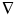

A CM1 model uses a combination of up to 16 terms to describe the exposure threshold of the resist. The terms may be physically- or empirically-based. The user may select which terms are used and the range over which they are permitted to vary.
The output of the model is a resist contour obtained from the equation:
where the threshold constant T as well as the linear ci and nonlinear (b and s) coefficients are to be fixed by tuning the model to a set of empirical CD/space measurements. The CM1 terms entered into the above equation have the form:
Here and are the gradient and convolution operators, ±b is the neutralization operator (positive for acid, negative for base), and Gs,p is a Gauss-Laguerre function of order p and characteristic width s.
In the Calibre CM1-based tools and commands, each modeling term Mi(I) is specified with the following parameters:
k is the derivative order (1 for slope, 2 for curvature)
n is the power of the term (1 for linear, 2 for square)
p is the Gauss-Laguerre polynomial order p (8 terms, 0 through 7, are supported)
b is the neutralization operator (+b for acid; -b for base)
s is the diffusion length
A set of values of the above parameters for all modeling terms Mi along with the threshold constant T and linear coefficients ci constitute a CM1 model.